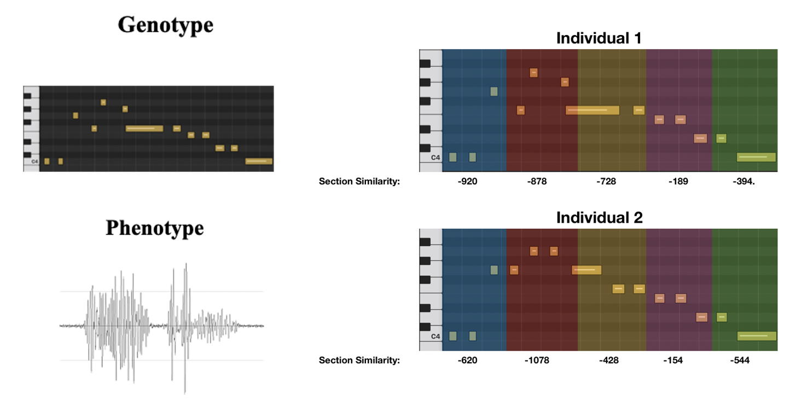
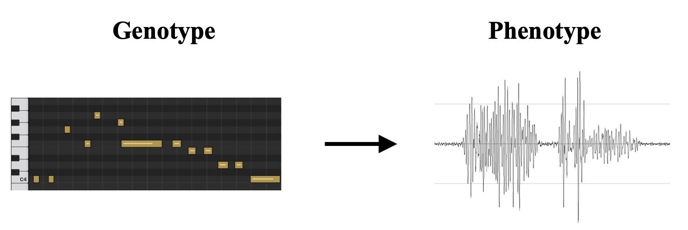
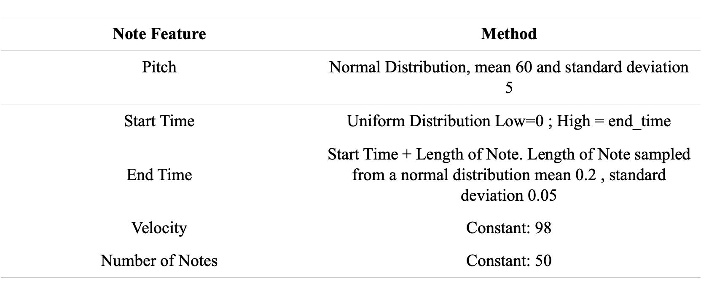
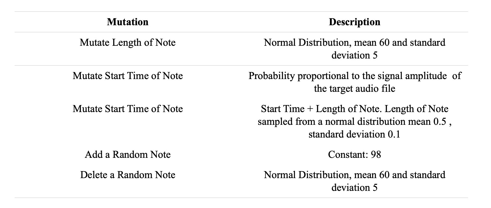
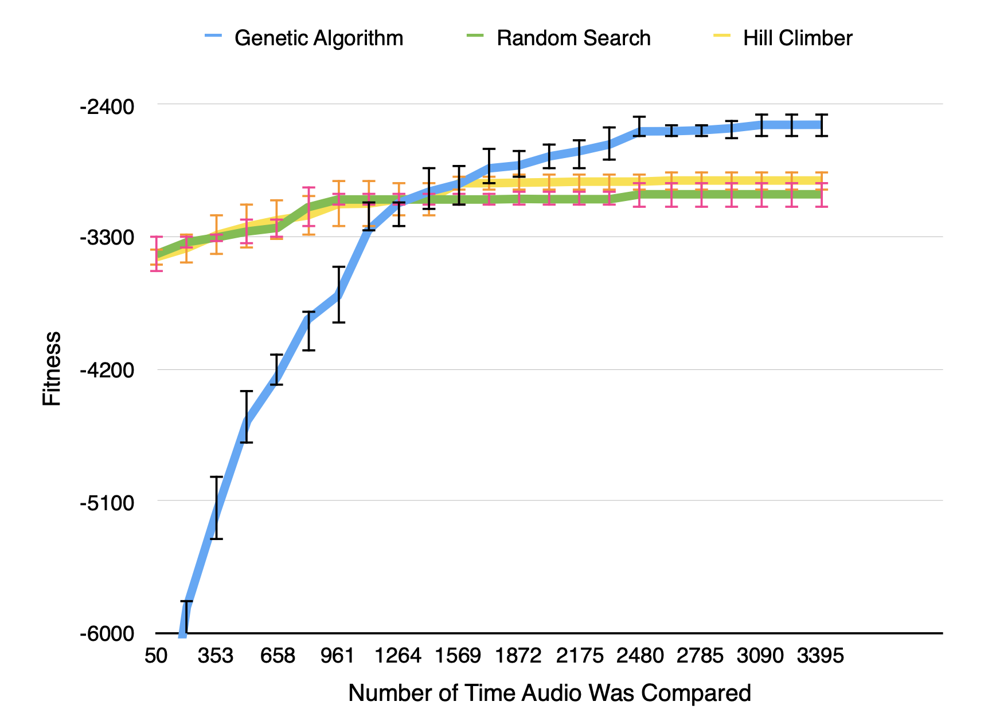

Audio to Midi Transcription Using a Genetic Algorithm¶
In this post we attempt to convert an audio excerpt from Twinkle Twinkle Little Star, played on the piano, into the corresponding MIDI file using genetic algorithm and show it performs better than a random search and a hill climber baseline.
Introduction¶
MIDI (Music Instrument Digital Interface) is the industry standard communication scheme for digital music devices. Although MIDI does not provide a perfect representation of human music, it provides tools that can be helpful to the study of performance practice, computer assisted performance, and improvisational composition. It is scheme of great value to the development of modern music. [2]. That being said, the development of an accurate Audio-to-Midi converted is commonly sought-after. Usual approaches to this task involve some sort of pitch detection mechanism. The list of algorithms developed to do this is extensive, yet due to the astonishing complexity and variety of musical sound, none of these can be used comfortably without human assistance. In the search for a more intelligent algorithm to convert from audio to midi a Genetic Algorithm will be used. A Genetic Algorithm, is a bio-inspired, optimization mechanism that can be used very generally. The simple task of converting an audio excerpt of Twinkle Twinkle Little Star into its corresponding MIDI representation will be attempted. The MIDI generated will be limited to only piano sounds.Keep in mind that although there is little novelty in this transcription, the hope is that further developments on the genetic algorithm will eventually outperform the current day pitch detection approaches to audio to midi conversion.
Problem Representation¶
Individual solution are represented by MIDI files (limited to piano as the only instrument). To evaluate the resemblance to the original audio file, the midi file will be converted to the corresponding audio file—see Figure 2 for an illustration.To create and handle MIDI we will use the Python Module Pretty_Midi. To convert the MIDI into the audio file, we will use the midi2audio interface to the FluidSynth synthesizer with the GS SoundFont.
Below we have an illustration of how we represent individual solutions. To do this we first crete an individual MIDI file (genotype), and to evaluate its resemblance to the original audio file the MIDI file is converted to its corresponding audio file.
Generating Initial Population¶
To begin the genetic algorithm, we dirst have to generate the initial population. We do so by creating some empirical rules
Mutuations¶
The mutations were decided to be as follows
Performance Curve¶
Finally our results can be summarized by the plot below
And below is our best fitness individual and the original twinkle twinkle little star audio
Original
Best Fitness